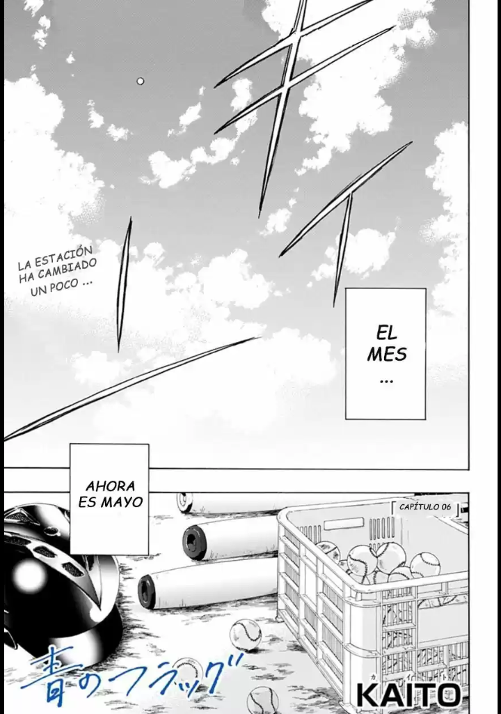
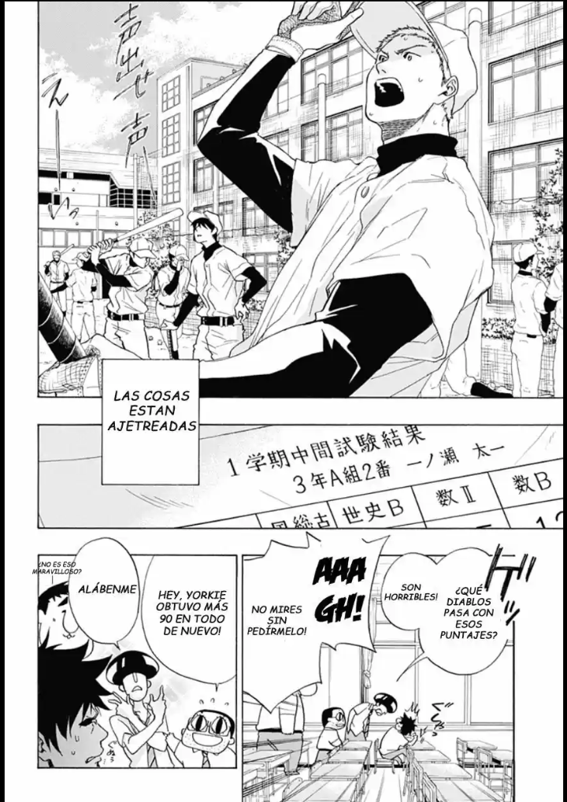

La clase de Taichi convence a Toma para que sea el líder del grupo de animadores en el festival deportivo, pero él pone una condición: que Taichi y Futaba sean sus ayudantes. Ambos se ponen en serio a practicar, decididos a responder a las expectativas de su amigo. ¡Sin embargo, cuando llega el gran día, algo le ocurre a Futaba…! ¡Las turbulencias amenazan la relación entre los tres!
 